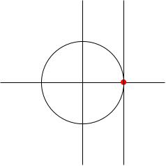

The matrix exponential
An example: the group U(1)
Lie theory is based on the observation that we can define an exponential function for matrices in just the same way we can for numbers.
Let U(1) be the set of unit complex numbers, i.e. the unit circle in the complex plane.
Any z in U(1) can be written as e to the i theta where \theta is the angle z makes with the x-axis. Here are some comments:
-
U(1) is a group under multiplication: z is in U(1) if and only if norm squared z (i.e. z bar z) equals 1 so if z 1 and z 2 are both in U(1) then norm squared z 1 z 2 equals z 1 z 2 z 1 bar z 2 bar equals z 1 z 1 bar z 2 z 2 bar equals 1 so U(1) is closed under multiplication.
-
The identity element is the number 1.
-
Any z in U(1) is the exponential of a pure imaginary number (and conversely). The pure imaginary axis is vertical, and therefore it's parallel to the tangent line to the unit circle at the point 1 (i.e. the tangent line to U(1) at the identity).

These three facts will generalise: given a group G of matrices, take the tangent space to G at the identity matrix (and translate it to pass through the zero matrix); the exponentials of these matrices are going to give us elements of G.
The matrix exponential function
If A is a square matrix then the
Let A be the 2-by-2 matrix 0, minus theta, theta, 0. We'll compute \exp(A). First let's compute the powers of A:
-
A squared equals minus theta squared, 0, 0 minus theta squared, which is just minus theta squared times the identity matrix,
-
A cubed equals 0, theta cubed, minus theta cubed, 0,
-
A to the 4 equals (A squared) squared, which is theta to the 4 times the identity.
-
A to the 5 equals theta to the 4 times A, etc
so we end up with: exp A equals the 2-by-2 matrix whose entries are: 1 minus a half theta squared plus one over 4 factorial theta to the 4 dot dot dot, minus theta plus one over three factorial theta cubed minus dot dot dot, theta minus one over three factorial theta cubed plus dot dot dot, 1 minus a half theta squared plus one over 4 factorial theta to the four dot dot dot, which is just the 2-by-2 matrix cos theta, minus sine theta, sine theta, cos theta where we have just observed that the power series in each entries are the Taylor series of cos and sin.
This is the 2-by-2 matrix that gives you a rotation by an angle \theta.
You should imagine that, as in this example, the exponential map "eats" a very simple matrix (like an n-by-n antisymmetric matrix) and outputs a much more complicated and useful matrix (like an n-by-n rotation matrix).
Let's compute exp of the 2-by-2 matrix 0, 1, 0, 0. From I+A we get 1, 1, 0, 1 Since A squared equals zero, all the other terms vanish, and this is the full answer. A matrix like this (where some power vanishes) is called